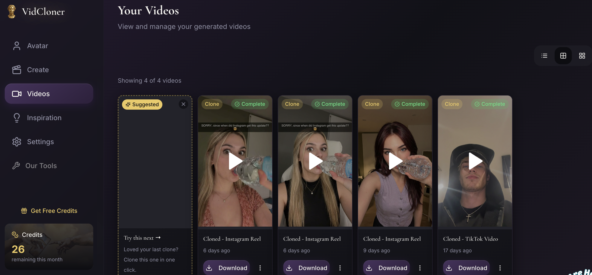
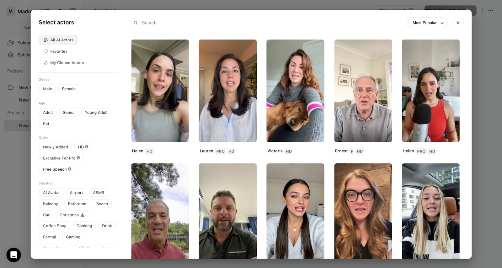

Arcads was built for performance marketers generating script-based ad creatives with stock AI actors. But for creators who want to clone viral content with their own face, or brands who need transparent pricing before committing, Arcads leaves a clear gap. Here are the five best alternatives ranked honestly.
Arcads is a useful tool for generating talking-head ad creatives at volume, but its model has a few friction points that push creators toward alternatives.

VidCloner is the strongest Arcads alternative for creators who want their own face in viral-format content. The workflow is the opposite of Arcads: instead of writing a script for a stock actor, you paste the URL of any trending TikTok or short-form video, select your avatar, and VidCloner generates a version of that video with your face replacing the original actor, same motions, same energy, same timing.
Used by 8,000+ creators, with flat-rate plans starting at $19/month. All pricing is public, no signup required to see it.
Creatify generates UGC-style video ads from a product URL at scale, with over 1,500 AI actors on its paid tiers. It includes competitor ad intelligence across 30M+ ads and a direct launcher into Meta, TikTok, and AppLovin ad managers, making it the strongest pick for media buyers running high-volume e-commerce campaigns.
Creatify, like Arcads, uses shared stock AI actors and requires you to supply a product URL or script. It cannot clone an existing viral video, you build from scratch. VidCloner skips scripting entirely by cloning proven viral content with your own avatar. If you are building a personal brand rather than running faceless e-commerce ads, VidCloner is the better fit.
HeyGen is a popular AI video generator offering 300+ stock AI presenters and a slide-script editor for producing marketing and training videos. It includes basic video translation features and is widely used for product explainers and e-commerce talking-head content.
HeyGen and Arcads share the same fundamental model: you write a script and a stock presenter reads it. HeyGen's pricing is transparent ($29/mo entry), which already makes it a better deal than Arcads for script-based content. But neither tool lets you paste a viral video URL and clone it with your own face, that is VidCloner's core advantage.
MakeUGC generates talking-head video ads from over 1,000 AI characters in 50+ languages. It offers custom avatar training and a dedicated API pipeline, making it well-suited for agencies that need programmatic video generation across multiple client accounts.
MakeUGC is metered per finished video and requires a paid trial to access. At $49/month for 5 videos, it is one of the priciest entry points on this list. VidCloner's Creator plan also delivers 15 credits for $49/month, three times the output, and does not require a paid trial to get started. MakeUGC suits API-heavy agency workflows; VidCloner suits individual creators and personal brands.
Bluma is an AI editing studio that lets you drop in a TikTok or Meta Ads URL to de-edit and rebuild the video timeline. It features a track-based editor and spreadsheet-style bulk variation generation, useful for media buyers who want granular control over existing ad structure rather than AI-generated presenters.
Bluma is an editor, not a cloner, you still need to supply your own replacement footage. VidCloner handles the avatar replacement automatically. If you want to rebuild a video's structure manually, Bluma gives you that control. If you want to clone a viral video instantly with your own face, VidCloner does it in one step.
| Rank | Tool | Best for | Pricing from | Clone from URL? |
|---|---|---|---|---|
| 1 | VidCloner | Cloning viral videos with your own avatar | $19/mo (5 credits) | ✓ Yes |
| 2 | Creatify | E-commerce product ad generation at volume | Free; $39/mo Starter | ✗ No |
| 3 | HeyGen | Stock AI presenter videos & templates | $29/mo Creator | ✗ No |
| 4 | MakeUGC | Talking-head UGC ads with API pipelines | $49/mo (5 videos) | ✗ No |
| 5 | Bluma | Timeline editing & bulk video variations | $36/mo | ✗ No (editor only) |

Paste any viral TikTok URL, pick your avatar, and post it under your own account, used by 8,000+ creators from $19/month.
Start Cloning Free